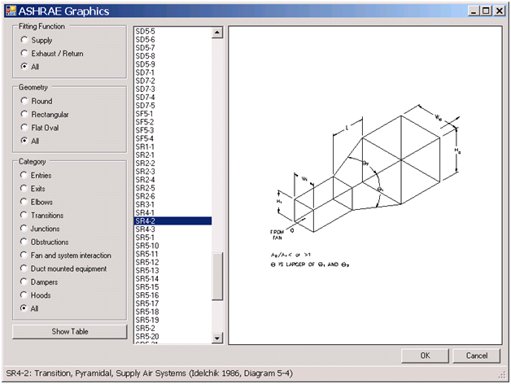

ASHRAE Viewer Plugin of the Month
We recently published our first ever Revit plugin of the month, for March, Adam's Room Renumbering add-in.
Now the second one is already available on Autodesk Labs as well, for April, an ASHRAE Viewer for Revit MEP by Martin Schmid of Autodesk's AEC Industry Success team:

The download includes ready compiled versions for both Revit 2011 and 2012, a complete user manual, and full source code, so you can use it as is, tweak it for your specific needs, or freely integrate the functionality into your workflow in other ways.
Check it out on the labs!